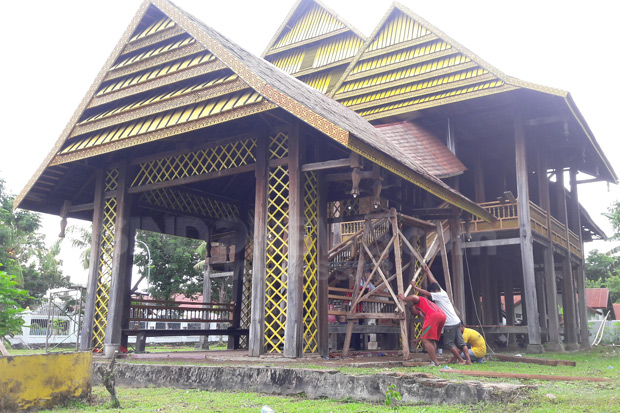

Bangunan ini memiliki arsitektur bergaya Eropa. Di dekat bangunan istana saat ini dibangun miniatur Saoraja dan di depan istana tersebut terdapat Monumen Perjuangan Rakyat Luwu berupa patung tangan yang memegang badik terhunus ke langit.
Istana ini dulunya berfungsi sebagai pusat pemerintahan Kerajaan Luwu. Namun, saat ini istana ini berfungsi sebagai Museum untuk mengenang perjuangan dan melestarikan kebudayaan Kerajaan Luwu.
Di Istana Luwu terdapat dua bangungan, yaitu Langkanae dan Salassae. Langkanae adalah sebutan kata lain dari istana. Langkanae ini dijadikan cagar budaya buatan Belanda untuk menggantikan Langkane yang dulu. Belanda membangunnya untuk kedatuan ketika Langkanae terbakar. Sedangkan Salassae adalah tempat pertemuan atau perjamuan para tamu-tamu istana.
 Di dalam Istana Kedatuan Luwu terdapat berbagai benda pusaka. Di antaranya, terpajang dalam lemari kaca, sertifikat Pahlawan Nasional RI bagi (almarhum) Andi Jemma ditandatangani Presiden Megawati Soekarnoputri pada 2004.
Ada pula boneka sepasang manekin berpakaian pengantin ala Luwu, Pelaminan khas adat setempat. Silsilah 23 generasi Pajung-e ri Luwu atau pohon famili dari raja-raja Kedatuan Luwu juga terpampang, tak ketinggalan karya legenda Batara Guru.
Tersimpan beragam senjata pusaka berupa keris. Di dalam lemari kaca, terpajang piring antik, alat musik kecapi, guci, keramik, dan bosara’ (wadah penyimpan panganan tradisional). Susunan raja-raja Kedatuan Luwu turut menghiasi dinding.
Peninggalan yang ada di Istana Luwu tidak berupa Mahkota, tetapi berbentuk Besi Pakka dan Bunga Waru, yang hanya dipakai oleh datu, yang merupakan simbol Dewata Matenruliwawo. Sekitar 20 meter sebelah timur ialah Masjid Jami` Tua Palopo dan kompleks istana Datu (raja) Luwu.